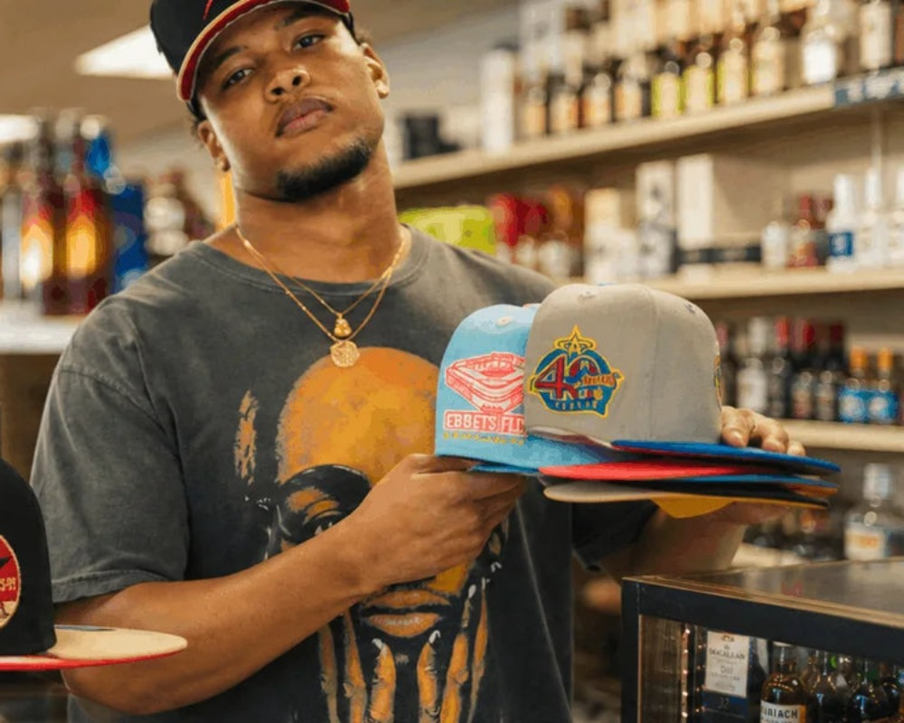
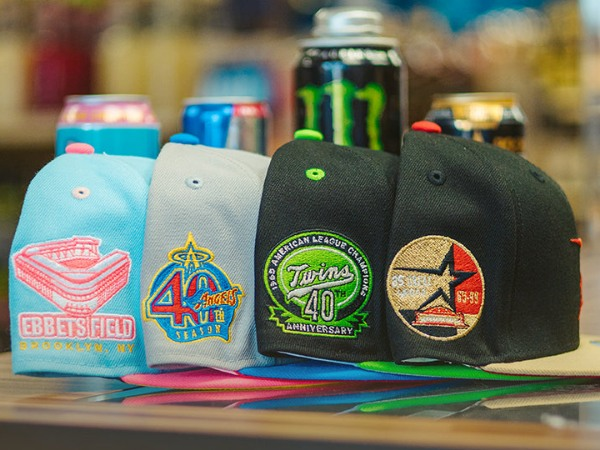
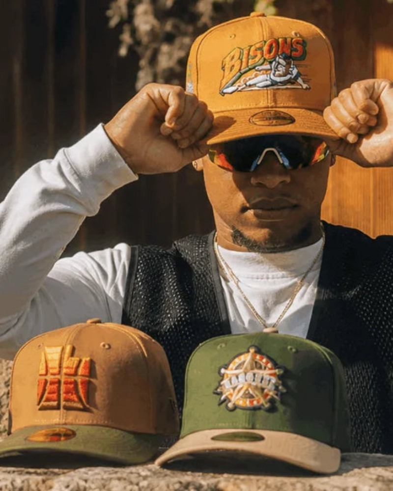
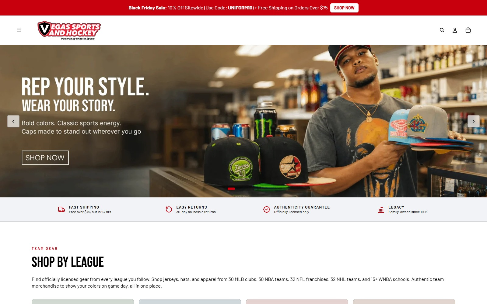
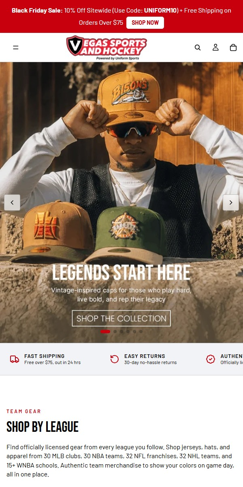
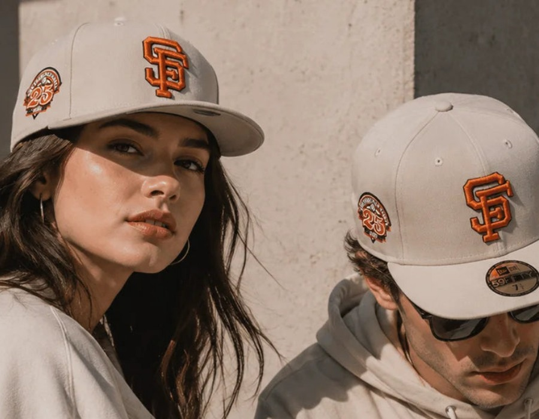

Store conversion
From May to July, fewer than one visit in 200 ended in an order. With so few orders there was too little data to learn from and too little demand to scale.
0.47%
1.40%
Case Studies / Vegas Sports & Hockey
Case Study · Shopify · Sports Apparel & Licensed Merchandise
Vegas Sports & Hockey has sold licensed jerseys, caps and collectibles in Las Vegas since 1998. Commerce Pundit rebranded and rebuilt its Shopify store, tuned the path to checkout, then put Google Ads and SEO behind it.


September and October average against the May to July average
The challenge
The reputation was built in person. Online it was not turning into orders, and weekly traffic sat in the hundreds.
From May to July, fewer than one visit in 200 ended in an order. With so few orders there was too little data to learn from and too little demand to scale.
Shoppers who arrived through search rarely bought, so paid traffic had little to build on.
Vegas Sports & Hockey and Uniform Sports both appeared across the store, search listings and ads. Shoppers and search engines had no single brand to remember.
Store conversion is measured across all sessions and search conversion across search sessions. After figures are the September and October average. The single brand is the goal set for the rebrand: one brand voice across store, search listings and ads.
The client

Vegas Sports & Hockey is a licensed sports shop in Las Vegas, founded in 1998 and still family owned. Online it trades as Uniform Sports.
It carries jerseys, fitted caps, tees, hoodies and collectibles across the NFL, NHL, MLB, NBA, NCAA and more, with a strong local focus on the Vegas Golden Knights, Las Vegas Raiders and Las Vegas Aviators.
Our scope covered the whole journey: a Shopify rebrand and theme upgrade, a CRO audit with a first round of changes, then paid and organic growth on the new foundation.
The plan
The client wanted a single partner answerable for the store and for the sales it produced.
Theme-level Liquid work, not template swaps. The store needed a structure that could hold hundreds of league, team and brand pages.
Every design choice was checked against the buying path: league, team, product, size, checkout.
Google Ads, SEO and AI visibility run on the same product and conversion data, so each channel feeds the others.
Unify the Vegas Sports & Hockey and Uniform Sports identity across storefront, search and ads.
Turn browsers into buyers on mobile and desktop with a faster path from league to checkout.
Reach fans searching for specific teams, players and gear through Google Ads and organic search.
Measure every channel against order value so budget goes where it earns.
The build · The season
The foundation came first, conversion second and paid traffic third, so every step made the next one pay back more. Weekly figures are sessions and sessions with a cart add, from Shopify Analytics.
Store conversion under 0.5% and almost no cart activity from search traffic.
Rebrand, redesign and theme upgrade.
A new visual identity and a storefront that speaks to fans in their own terms.
A custom Online Store 2.0 theme sized for a catalog of league, team and brand pages.
New identity, league-first storefront and a custom Online Store 2.0 theme on Shopify.
CRO audit, then changes on the buying path.
A funnel audit, then changes aimed at the steps where shoppers dropped.
Net sales run 12.7x the May to July monthly average.
The highest weekly rate in the weeks reviewed. Sessions with a cart add run about 13x the best pre-launch week.
Google Ads ramp and SEO build-out.
Weekly traffic begins to climb as campaigns scale and the new storefront catches the clicks.
Campaigns launched gradually from mid August 2026 and scaled as data came in.
A catalog structure that lets team and league pages rank for how fans actually search.
Weekly sessions pass the best pre-launch week by about 2.5x. Conversion is still catching up.
AI visibility and ongoing optimization.
Content and markup shaped so AI assistants and search summaries can read and cite the store.
October orders stay near September’s level, and early November traffic is about 2.6x the best pre-launch week.
Coral-filled markers show the three turning points: the launch, the start of ads and the conversion peak.
The storefront
Fans arrive with a team in mind. The homepage gets them there in one click and answers their trust questions on the way.


A fan-first banner carousel sets the tone and leads straight to league shopping.
Five points sit directly under the hero, shown in the strip below.
Each league opens its own team list, so shoppers reach the right jersey fast.
The owner and founding story turn a faceless online shop into the Las Vegas store people already know.
Featured cards for the Golden Knights, Raiders and Aviators match the highest-intent local searches. New Era Fitted and official partners sit in the same block.
A first-order discount on the Join The Club signup builds a list the store owns, for abandoned-cart and seasonal campaigns.
The page also has an announcement bar, a header with Shop All, By League, New Arrivals, Best Sellers and Sale, a New Arrivals and Best Sellers block, and Shop by Brand and by Category.
The results
Figures come from Shopify Admin and Shopify Analytics. Each bar compares the September and October monthly average with the May to July monthly average, shown as 1x.
Bars are drawn to scale against the 10x tile.
Where it converted
Last 90 days to mid November 2026, from Shopify Analytics, unless stated.
Share of all sessions
Bars are drawn to scale.
Share of orders since mid August
Search visits ran 2.5x the pre-launch level in September and October.
Share of sessions
Mobile sessions convert at 1.67%.
Conversion rate
Google referrals convert about 6x direct visits.
Under the hood
Google Ads management, search term review and budget allocation
CRO testing on navigation, product pages and the mobile and desktop checkout path
SEO for team, league and product pages, including technical and structured data upkeep
AI visibility monitoring and content updates for AEO and GEO
Shopify theme maintenance, app review and performance monitoring
FAQ
Ads buy traffic, and a store only turns that traffic into orders if shoppers trust it and find products quickly. Fixing identity, navigation and trust signals first means every ad click lands on a page built to convert.
Yes. One team covers Shopify development, rebranding, theme upgrades, CRO audits and changes, Google Ads, SEO and AI visibility, so each channel works from the same product and conversion data.
Book a free strategy call. We review your store, traffic and goals, then scope the rebrand, CRO and growth work in order of impact.
More case studies
The takeaway
Vegas Sports & Hockey already had a loyal local following. The new Shopify store, a conversion-focused build and paid and organic search now carry that trust online, and the first three months show traffic, cart activity and orders moving together.
Rebrand, convert, advertise and rank your Shopify store with one team.
